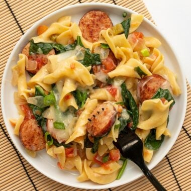

Cheesy Sausage Pasta

Description
Cheesy Sausage Pasta is a quick and easy meal for quick weeknight dinners.
Everything cooks in one pot for fast prep and minimum clean-up!
Ingredients
- 1 yellow onion
- 7 oz. smoked sausage
- 1 Tbsp cooking oil
- 1 10oz. can diced tomatoes with green chiles (Rotel)
- 8 oz. wide egg noodles
- 1.5 cups chicken broth
- 3 cups fresh spinach
- 1 cup shredded Monterey Jack
- 1 green onion, sliced